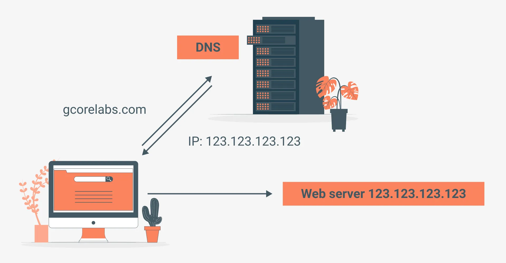
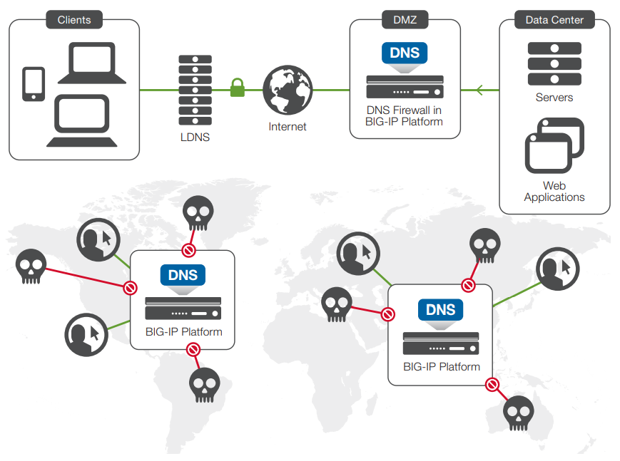

IMPORTANCIA

Facilidad de UsoPermite a los usuarios acceder a servicios en línea mediante nombres fáciles de recordar en lugar de direcciones IP complicadas. |
EscalabilidadSu arquitectura distribuida y jerárquica permite manejar miles de millones de nombres de dominio, garantizando un rendimiento eficiente incluso con el crecimiento exponencial de Internet. |
Velocidad y rendimiento
Gracias a la caché y a la optimización en la resolución de nombres, el DNS ayuda a reducir los tiempos de carga de sitios web. |
Compatibilidad con otros servicios
Es esencial para el funcionamiento de correos electrónicos, redes privadas virtuales (VPN), redes de distribución de contenido (CDN) y más. |
Seguridad y EstabilidadAunque el DNS es objetivo de ataques cibernéticos, tecnologías como DNSSEC ayudan a proteger su integridad, asegurando una experiencia confiable para usuarios y empresas. |